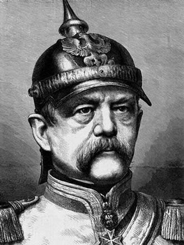

Bismarck (1815-1898)

"Sana Muâsýr Bir Vücud Olamadýðýmdan Müteessirim Ey Muhammed! (a.s.m)"Bediüzzaman Hazretlerine, Osmanlý Devleti'nin akýbeti sorulduðunda; bir Avrupa devletine hamile olduðunu ve doðuracaðýný beyan etmiþti. Diðer yandan, Avrupa'nýn da Ýslami bir devlet doðuracaðýný yýllar öncesinden beyan etmiþti. Avrupa'da muazzam inkýlaplarýn olacaðýný ve oralarda Ýslam güneþinin parlayacaðýna dair çeþitli deliller göstermiþtir. "... Amerika ve Avrupa'nýn zeka tarlalarý Mister Carlyle ve Bismarck gibi böyle dahî muhakkikleri mahsulat vermesine istinaden, ben de bütün kanaatimle derim ki: Avrupa ve Amerika Ýslamiyetle hamiledir; günün birinde bir Ýslamî devlet doðuracak..." (Tarihçe-i Hayat s. 82).
Bediüzzaman Hazretleri Risale-i Nur'da Bismarck' ýn "on dokuzuncu asrýn en akýllý ve en büyük bir filozofu ve siyasetin ve içtimaiyat-ý beþeriyenin en mühim bir þahsiyeti" olduðundan bahsederek Ýslamiyet hakkýndaki müjdelerle süslü ifadelerine yer vermektedir: "Baþka kitaplar, hiçbir cihette Kur'ân'a yetiþemez. Hakiki söz odur, onu dinlemeliyiz" (Emirdað Lahikasý, s. 234)
Bismarck'ýn Ýfadeleri
Alman devlet adamý ve þansölyesi, Alman ulusal birliðinin kurulmasýnda, belki de en önemli rolü oynamýþ kiþi olan Prens Bismarck'ýn Hz. Muhammed ve Kur'an'ý Kerim ile ilgili sözleri, hakikatlere hayranlýðýnýn güzel ifadesidir (Ýþaratü'l-Ýcaz, s. 262):
"Sana Muâsýr Bir Vücud Olamadýðýmdan Müteessirim Ey Muhammed! (a.s.m)
Muhtelif devirlerde, beþeriyeti idâre etmek için taraf-u Lâhûtîden geldiði iddiâ olunan bütün münzel semâvî kitaplarý tam ve etrâfýyla tetkik ettimse de, tahrif olunduklarý için, hiçbirisinde aradýðým hikmet ve tam isâbeti göremedim. Bu kanunlar deðil bir cemiyet, bir hâne halkýnýn saadetini bile temin edecek mâhiyetten pek uzaktýr. Lâkin, Muhammedîlerin Kur'ân'ý bu kayýttan âzâdedir. Ben Kur'ân'ý her cihetten tetkik ettim, her kelimesinde büyük hikmetler gördüm. Muhammedîlerin düþmanlarý, "Bu kitap Muhammed'in (a.s.m.) zâde-i tâbý" olduðunu iddiâ ediyorlarsa da, en mükemmel, hattâ en mütekâmil bir dimaðdan, böyle hârikanýn zuhûrunu iddiâ etmek, hakîkatlere göz kapayarak, kin ve garaza âlet olmak mânâsýný ifade eder ki, bu da ilim ve hikmetle kabil-i telif deðildir. Ben, þunu iddiâ ediyorum ki:
Muhammed (a.s.m.) mümtâz bir kuvvettir. Destgâh-ý Kudretin böyle ikinci bir vücûdu imkân sahasýna getirmesi ihtimâlden uzaktýr.
Sana muâsýr bir vücud olamadýðýmdan dolayý müteessirim ey Muhammed (a.s.m.)! Muallimi ve nâþiri olduðun bu kitap senin deðildir. O Lâhûtîdir. Bu kitabýn Lâhûtî olduðunu inkâr etmek, mevzû ilimlerin butlânýný ileri sürmek kadar gülünçtür. Bunun için, beþeriyet senin gibi mümtaz bir kudreti bir defa görmüþ, bundan sonra göremeyecektir."
Prens Otto Von Bismarck
Bismarck, ordudan ayrýlýp toprakla uðraþan Prusyalý eski bir subayýn oðlu olarak dünyaya geldi (1815). Altý-oniki yaþ arasýný sýký bir eðitim ve disiplinin uygulandýðý yatýlý okulda geçirdi. 1835 yýlýnda hukuk eðitimini tamamladý. 1839 yýlýnda annesinin ölümü üzerine Pomeranya'ya yerleþti. 1847 yýlýnda Prusya eyalet meclisine seçildi. Daha sonra Frankfurt diyet meclisinde Prusya'yý temsil etti. Bir ara Petersburg ve Paris'te büyükelçilik yaptý.
Berlin'e geri çaðrýldýktan sonra devlet bakaný, ardýndan baþbakan oldu. Dýþiþleri bakanlýðýný da beraber yürüttü. Alman imparatoru I. Wilhem ile uyumlu çalýþarak çok sayýda reform yaptý. Prusya ordusunu çok güçlü hale getirdi. Ýmparator ile baþlayan etkili iþbirliði yirmi altý yýl sürdü (1862-1888). Alman birliðinin kurulmasýndaki en büyük rolü Otto von Bismarck üstlenmiþtir. Önce Avusturya'yý sonra da Fransa'yý yenen Prusya ordularý, Paris'e girdikten sonra Almanya'nýn Ýmparatorluk olduðu ilân edilmiþ ve Versailles Sarayý'nda düzenlenen bir törenle Wilhelm, "Kayzerlik tacý"ný giymiþtir.
Alman siyasî tarihi 1803'den beri bu devletin daima geniþlemeye çalýþtýðýný göstermekle beraber, Bismarck devri büyük Alman Birliðinin güçlü temeller üzerine kurulduðu dönemdir. Bismarck'ýn yönetimden ayrýlmasýndan sonra, ýrkçýlýk kendini göstermeye baþladý. Bismarck dönemi milletlerarasý dengelerin çok titiz bir þekilde göz önüne alýnmasýna raðmen, ondan sonra yayýlmacýlýk siyasetinin izlenmesi, Almanya'ya pahalýya mal oldu ve bu süreç Birinci Dünya Savaþý ile son buldu.
Alman Birliði ve Bismarck
XIX. yüzyýlýn ikinci yarýsýna kadar bugünkü Almanya sýnýrlarýnda onlarca baðýmsýz prenslik yer alýyordu. Bu prensliklerin sayýlarý Viyana Kongresi'nden sonra azaltýlmýþtý ve bir Germen Konfederasyonu kurulmuþtu. Bugün Almanya'nýn doðusu ve Polonya topraklarý üzerinde kurulu olan Prusya güçlenerek bu prenslikleri birleþtirip Almanya Ulusal Birliði'ni oluþturmaya çalýþýyordu. Bu yolda Prusya'nýn en önemli rakibi Avusturya'ydý. Prusya'nýn Alman Ulusal Birliði'ni kurabilmesi için Danimarka ve Fransa ile de savaþmasý gerekliydi. 1867 yýlýnda iki Alman dükalýðý olan Schlezwig ve Hollestein'i ele geçirmek amacýyla German Konfederasyonu adýna Prusya ve Avusturya Danimarka'ya savaþ açtý. Savaþtan sonra bu iki dükalýðýn yönetimi konusunda Prusya ve Avusturya arasýnda anlaþmazlýk çýktý. Prusya Baþbakaný Bismarck, Fransa ve Rusya'nýn tarafsýzlýðýný saðladýktan sonra Avusturya'ya savaþ açtý ve 1866'da bu ülkeyi Sadowa'da yenilgiye uðrattý. Bundan sonra 1867'de Prusya'nýn denetiminde Kuzey Germen Konfederasyonu kuruldu. Bismarck, Avusturya'dan sonra Fransa'nýn da gücünü kýrmak istiyordu. Be sefer Avusturya ve Rusya'nýn tarafsýzlýðýný saðladýktan sonra Fransa'ya savaþ açtý.
1870'te Sedan Savaþý'nda yenilen Fransa'nýn böylece Katolik Alman prenslikleri üzerindeki denetimi kýrýlmýþ oldu. Prusya 1871 Frankfurt Barýþý ile Alsace-Lorraine'i de ilhak etti. Bundan sonra Mein akarsuyunun güneyindeki Katolik Alman devletçikleri Prusya'ya katýldýlar ve böylece Alman Ulusal Birliði kurulmuþ oldu. Prusya Kralý Alman Ýmparatoru, Bismarck da Alman Þansölyesi ünvanýný aldýlar.
1.Wilhelm'in ölümü, yeni imparatorun farklý bir siyaset takip etmesi, Bismarck'ýn da baþbakanlýktan ayrýlmasýyla Avrupa tarihinde çok önemli bir dönem sona erdi.